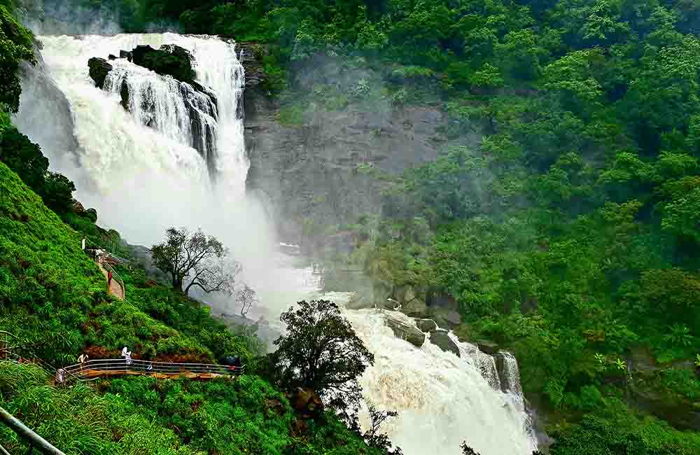
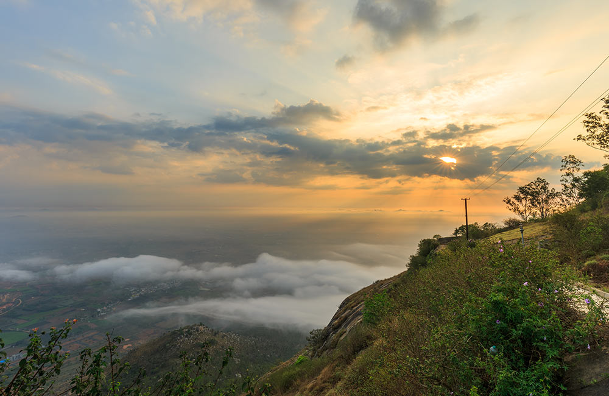

CHIKMAGALUR A coffee lover’s paradise, Chikmagalur will be etched in your memory for a long time. The majestic Mullayangiri Ranges surround this stunning hill station, which is peppered with tea and coffee plantations, milky-white waterfalls, and beautiful parks. Chikmagalur is definitely a treat for adventurous souls too. Plan a stay at one of the many hotels in Chikmagalur well in advance as the hill station receives a good footfall of visitors.
Popular Places to Visit : Hebbe Falls, Kallathigiri Falls, Hanumana Gundi Falls, Bhadra Wildlife Sanctuary, Mahatma Gandhi Park, Coffee Museum, Hirekolale Lake, Kodandarama Temple.
Things to Do : Take a walk through the tea and coffee plantations, trek to the highest Mullayanagiri Peak, enjoy scenic views at Kyatanamakki, pay your respects at Amruteshwara and Vidyashankara temples
Popular Places to Visit : Hebbe Falls, Kallathigiri Falls, Hanumana Gundi Falls, Bhadra Wildlife Sanctuary, Mahatma Gandhi Park, Coffee Museum, Hirekolale Lake, Kodandarama Temple.
Things to Do : Take a walk through the tea and coffee plantations, trek to the highest Mullayanagiri Peak, enjoy scenic views at Kyatanamakki, pay your respects at Amruteshwara and Vidyashankara temples
BR Hills also known as Biligirirangana Hills, is one of the most beautiful hill stations in Karnataka, perched at an elevation of 5900 feet above sea level. It is located in South Karnataka, at the confluence of the Eastern and Western Ghats, and is a preferred holiday destination among nature and wildlife lovers, adventure enthusiasts, and shutterbugs.
Popular Places to Visit : BRT Wildlife Sanctuary, Biligiri Rangaswamy Temple, Dodda Simpage Mara Temple
Things to Do : Go for a jungle safari at the wildlife sanctuary and spot tigers, leopards, sambar and many other species of animals and birds, trek to the highest peak here, enjoy boating, angling and fishing at the Cauvery and Kapila rivers, try river rafting, shop for artefacts, handicrafts and other local products
Popular Places to Visit : BRT Wildlife Sanctuary, Biligiri Rangaswamy Temple, Dodda Simpage Mara Temple
Things to Do : Go for a jungle safari at the wildlife sanctuary and spot tigers, leopards, sambar and many other species of animals and birds, trek to the highest peak here, enjoy boating, angling and fishing at the Cauvery and Kapila rivers, try river rafting, shop for artefacts, handicrafts and other local products


NANDI HILLS , located at an elevation of 4849 feet, is one of the most famous hill stations in Karnataka. Apart from the lush green surroundings, trekking trails and stunning viewpoints, the place also has a popular historical fortress with numerous monuments and temples. Nandi Hills was Tipu Sultan’s summer retreat so many things related to his life and legacy can be found here. His regal residence, with its high pillars, painted walls, and eye-catching ceilings and archways, is a major attraction here.
Popular Places to Visit: Tipu’s Drop, Tipu’s Summer Residence, Amrita Sarovar, Bhoga Nandeeshwara Temple, Brahmashram, Nehru Nilaya, Grover Zampa Vineyards
Things to Do: Explore Tipu’s Summer Residence, enjoy paragliding over the hills and valleys, spend some serene time at Brahmashram, enjoy trekking and cycling
Popular Places to Visit: Tipu’s Drop, Tipu’s Summer Residence, Amrita Sarovar, Bhoga Nandeeshwara Temple, Brahmashram, Nehru Nilaya, Grover Zampa Vineyards
Things to Do: Explore Tipu’s Summer Residence, enjoy paragliding over the hills and valleys, spend some serene time at Brahmashram, enjoy trekking and cycling
KEMMANAGUNDI is among the best hill stations to visit in Karnataka for nature lovers and adventure seekers. The hill station has a plethora of options for different types of tourists, ranging from beautiful gardens and trekking trails to waterfalls and temples. Plan a trip to Kemmanagundi if you want to escape the heat or simply spend some time in nature.
Popular Places to Visit : Hebbe Falls, Mullayanagiri Peak, Z Point, Shiva Temple, Kalhatti Falls, Rock Garden, Rajendra Hill, Bhadra Wildlife Sanctuary
Things to Do : Enjoy trekking and hiking to Hebbe Falls, shop for local handicrafts, plan a picnic near the waterfalls, spot tigers, elephants, jackals and many endangered animals and birds at the wildlife sanctuary
Popular Places to Visit : Hebbe Falls, Mullayanagiri Peak, Z Point, Shiva Temple, Kalhatti Falls, Rock Garden, Rajendra Hill, Bhadra Wildlife Sanctuary
Things to Do : Enjoy trekking and hiking to Hebbe Falls, shop for local handicrafts, plan a picnic near the waterfalls, spot tigers, elephants, jackals and many endangered animals and birds at the wildlife sanctuary